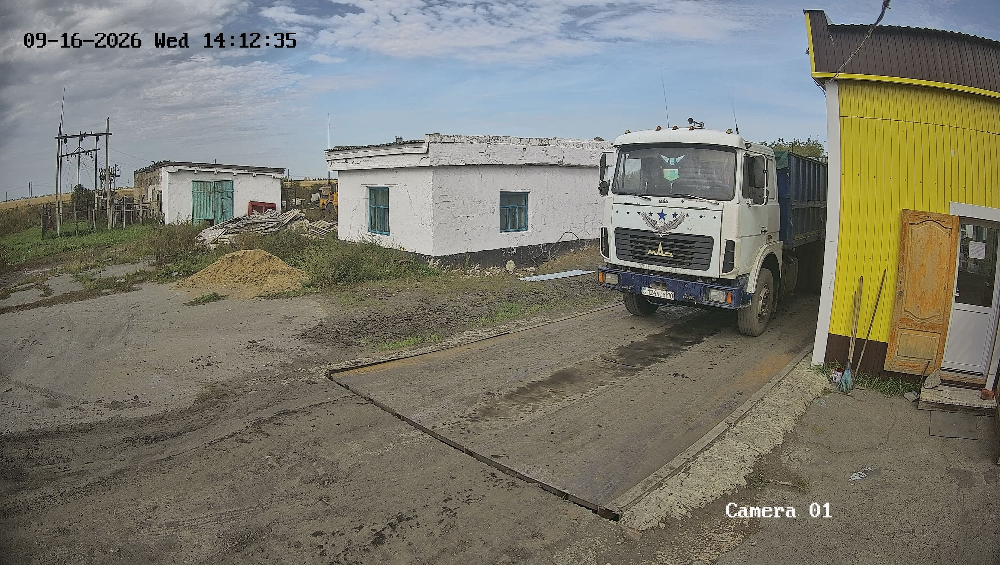
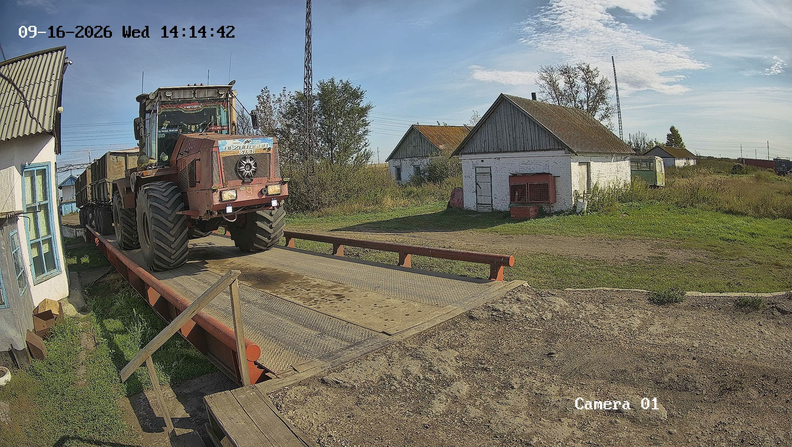

🤖 Студия компьютерного зрения — YOLO11
Снимки с камеры весовой платформы элеватора с результатами инференса модели · ТОО «Костанай-Агро»

Вес совпадает — нарушений нет
Бункер: 12 960 кг
Весы: 12 940 кг
Δ -20 кг (-0.15%)

Вес совпадает — нарушений нет
Бункер: 14 600 кг
Весы: 14 580 кг
Δ -20 кг (-0.14%)

Вес совпадает — нарушений нет
Бункер: 13 200 кг
Весы: 13 170 кг
Δ -30 кг (-0.22%)

Критическая недостача зерна — подозрение на слив
Бункер: 15 400 кг
Весы: 14 150 кг
Δ -1 250 кг (-8.12%)